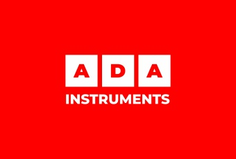
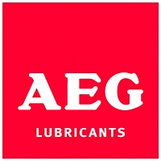

Где и когда
10–13 ноября 2026
МВЦ «Крокус Экспо», павильон 2. Московская область, Красногорск, Международная улица, 18.
10–13 ноября 2026 · Москва · Крокус Экспо
Найдите нужного участника, сохраните номер стенда и посмотрите, что он привёз. Здесь — контакты компаний, каталоги, программа, спикеры и публикации из Telegram.
Независимый портал по открытым материалам выставки. Срез: 10 ноября 2026.
Цифровые платформы, автоматизация, продвижение и исследования. 14 организаций выставки с описанием услуг, контактами и источниками.
Найти сервис или делового партнёра →10–13 ноября 2026
МВЦ «Крокус Экспо», павильон 2. Московская область, Красногорск, Международная улица, 18.
Рубрики, стенды, контакты, фотографии, видео и каталоги. В каждой карточке — ссылка на оригинал и его снимок.
Открыть каталог →Проверяем объявления участников. Различаем конкурсы на стендах, онлайн-розыгрыши и подарки за визит; не придумываем время.
Посмотреть объявления →
Компания A-iPower вышла на российский рынок в сентябре 2019 года и, с этого момента держит марку своего бренда на самом высоком уровне. Всего опыт производства компании в создании…

ABC TOOLS MFG. CORP. (основана в 2006 году в Циндао) — производитель с надёжной базой: 3 завода и выпуск более 3 миллионов единиц продукции в год. Компания соответствует…

ADA Instruments торговая марка измерительного, диагностического и другого оборудования для строительства, геодезии, поиска подземных коммуникаций, неразрушающего контроля и диагностики.

Компания ООО «ИНТЕНС» официальный дистрибьютор торговой марки AEG lubricants - масел и смазок для садово-парковой техники и инструмента. В ассортименте представлены масла для 2Т и 4Т двигателей, масла…
Компания AIRLINE специализируется на разработке, производстве и реализации профессиональных автомобильных инструментов, ассортимент которых насчитывает более 3000 SKU. Компанию отличает уникальный подход к созданию и продвижения своих товаров. Каждый…

Мы являемся одним из ведущих индийских производителей и экспортёров смазочного оборудования, ручного и садового инструмента. Компания располагает современным производственным предприятием в Лудхиане, Индия, а корпоративный офис продаж находится…
Последние посты каналов. Не все публикации посвящены выставке.
🏨 Смысл важнее стен: как вкладываться в туризм, когда привычные механизмы больше не работают 🚫 Раньше формула успеха в гостиничной недвижимости была проста — появилась…
Скоро в продаже 🔥
Минздрав Московской области высказался против дистанционной продажи вина. Retail.ru в MAX #retailНовости
Суд признал «Звездочки» описанием формы макарон, а не брендом. Retail.ru в MAX #retailНовости
Вышло новое видео 🎞️ MITEX 2026: Самый масштабный обзор выставки и главных новинок 📺 Рутуб 📺 ВК Видео 📺 Ютуб
Заклепочный пистолет Интерскол #интерскол #лстк https://t.me/interskoltools